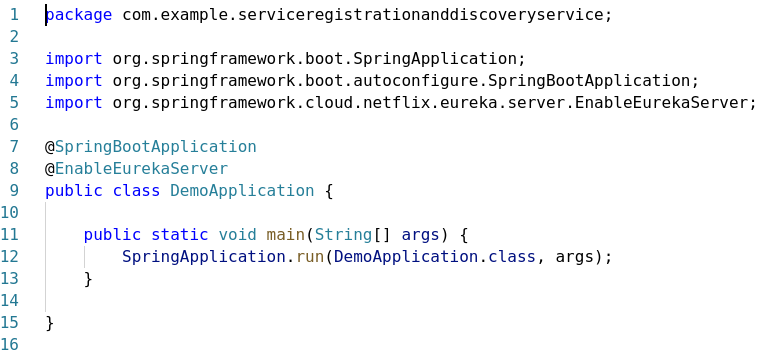

Prerequisites
JDK 1.8
IDE
Tomcat
初探：Spring Boot 启动 Eureka Server 和 Eureka Client微服务
The first one is the server which needs only Eureka Server dependency.
Spring Initializr > (Repo location chooses: https://start.aliyun.com/) Generate a Maven Project > Group: com.ustb > Artifact: service-registration-and-discovery-service > Dependencies: Eureka Server
Then second one(a client) requires both Eureka Server and Eureka Discovery Client dependencies.
开启一个 Eureka 服务注册

简单地使用注解就可以了，另外需要在application.properties中进行配置
与注册中心对话
1 | package com.example.serviceregistrationanddiscoveryclient; |
这里通过注解EnableDiscoveryClient来继承注册微服务的接口
在类中通过注解@RequestMapping(“/service-instances/{applicationName}”) 提供该client的访问接口
提供服务
微服务有两种方法注册到 Eureka 中心，一种是本地启动的Spring Boot程序添加注解 @EnableDiscoveryClient；
第二种是在配置文件中添加 defaultZone: 后加Eureka中心的地址（http://localhost:8761/eureka）
要想从Eureka中心获取可用的微服务，默认的XML方式解析起来比较麻烦。我们可以通过在Eureka里写一个 discoveryClient 的 controller来实现。
配置里写 eureka.client.fetch-registry=true。
但同时又不想 eureka server 自己也被其他服务发现，这时需要配置 eureka.client.register-with-eureka=false
注意：Spring Cloud Gateway 依赖和 Spring Web不能同时添加
学习：源码启动 Eureka Server， Eureka Client 和微服务
安装
1. IDEA选2019.2-2020.1 的版本 ； jdk1.8 ; Tomcat 8/9
2. 注册码云帐号，然后克隆项目：
1 | git clone -b web3 --single-branch https://gitee.com/Shane1501/eureka.git |
IDEA 打开项目确认已切换到 web3 分支
3. 配置gradle
把项目根目录下的 build.gradle.IDEA版本号（我是 build.gradle.IDEA2019.3） 拷贝一份新的改为 build.gradle1
cp build.gradle.IDEA2019.3 build.gradle

（可以选用用阿里云镜像，把下面文件保存成 init.gradle 放到 USER 目录下的 .gradle 文件夹里）1
2
3
4
5
6
7
8
9
10
11
12
13
14
15
16
17
18
19
20
21
22
23
24
25
26
27
28
29
30
31
32
33allprojects{
repositories {
def ALIYUN_REPOSITORY_URL = 'https://maven.aliyun.com/repository/public/'
def ALIYUN_JCENTER_URL = 'https://maven.aliyun.com/repository/jcenter/'
def ALIYUN_GOOGLE_URL = 'https://maven.aliyun.com/repository/google/'
def ALIYUN_GRADLE_PLUGIN_URL = 'https://maven.aliyun.com/repository/gradle-plugin/'
all { ArtifactRepository repo ->
if(repo instanceof MavenArtifactRepository){
def url = repo.url.toString()
if (url.startsWith('https://repo1.maven.org/maven2/')) {
project.logger.lifecycle "Repository ${repo.url} replaced by $ALIYUN_REPOSITORY_URL."
remove repo
}
if (url.startsWith('https://jcenter.bintray.com/')) {
project.logger.lifecycle "Repository ${repo.url} replaced by $ALIYUN_JCENTER_URL."
remove repo
}
if (url.startsWith('https://dl.google.com/dl/android/maven2/')) {
project.logger.lifecycle "Repository ${repo.url} replaced by $ALIYUN_GOOGLE_URL."
remove repo
}
if (url.startsWith('https://plugins.gradle.org/m2/')) {
project.logger.lifecycle "Repository ${repo.url} replaced by $ALIYUN_GRADLE_PLUGIN_URL."
remove repo
}
}
}
maven { url ALIYUN_REPOSITORY_URL }
maven { url ALIYUN_JCENTER_URL }
maven { url ALIYUN_GOOGLE_URL }
maven { url ALIYUN_GRADLE_PLUGIN_URL }
}
}
导入
4. 配置 Tomcat

在Tomcat启动时添加1
2-Deureka.waitTimeInMsWhenSyncEmpty=0
-Deureka.numberRegistrySyncRetries=0
以加快 eureka 启动速度。
或直接修改 eureka-server/src/main/resources/eureka-server.properties 文件，取消配置注释1
2eureka.waitTimeInMsWhenSyncEmpty=0
eureka.numberRegistrySyncRetries=0
也可达到同样效果。
配置war包exploded模式可以方便运行时实时更新配置。
6. 点击启动Tomcat，会弹出eureka界面

源码编译即告完成。
Eureka 源码解析
服务发现组件 package com.netflix.discovery
v1.1版本
DiscoveryClient.java1
2
3
4
5
6
7
8
9
10
11
12
13
14
15
16/**
* Makes remote calls with the corresponding action(register,renew etc).
*
* @param action
* the action to be performed on eureka server.
*
* Try the fallback servers in case of problems communicating to
* the primary one.
*
* @return ClientResponse the HTTP response object.
* @throws Throwable
* on any error.
*/
private ClientResponse makeRemoteCall(Action action, int serviceUrlIndex) throws Throwable {
......
}
接收端： package com.netflix.eureka;
RemoteRegionRegistry.java1
2
3public RemoteRegionRegistry(String regionName, URL remoteRegionURL) {
......
}
那么，一个 InstanceInfo 实例是如何产生的呢？
com/netflix/eureka/ExampleEurekaService.java1
43 InstanceInfo instanceInfo = new EurekaConfigBasedInstanceInfoProvider(instanceConfig).get();
com/netflix/appinfo/providers/EurekaConfigBasedInstanceInfoProvider.java1
2
3
4
5
6
7
8
9
10
11
12
13
14
15
16
17
18
19
20
21
2284 builder.setNamespace(config.getNamespace())
.setInstanceId(instanceId)
.setAppName(config.getAppname())
.setAppGroupName(config.getAppGroupName())
.setDataCenterInfo(config.getDataCenterInfo())
.setIPAddr(config.getIpAddress())
.setHostName(defaultAddress)
.setPort(config.getNonSecurePort())
.enablePort(PortType.UNSECURE, config.isNonSecurePortEnabled())
.setSecurePort(config.getSecurePort())
.enablePort(PortType.SECURE, config.getSecurePortEnabled())
.setVIPAddress(config.getVirtualHostName())
.setSecureVIPAddress(config.getSecureVirtualHostName())
.setHomePageUrl(config.getHomePageUrlPath(), config.getHomePageUrl())
.setStatusPageUrl(config.getStatusPageUrlPath(), config.getStatusPageUrl())
.setASGName(config.getASGName())
.setHealthCheckUrls(config.getHealthCheckUrlPath(),
config.getHealthCheckUrl(), config.getSecureHealthCheckUrl());
125 instanceInfo = builder.build();
instanceInfo.setLeaseInfo(leaseInfoBuilder.build());
而config的来源则是
com/netflix/eureka/ExampleEurekaService.java1
61 DynamicPropertyFactory configInstance = com.netflix.config.DynamicPropertyFactory.getInstance();
com/netflix/config/DynamicPropertyFactory.java1
2279 initWithConfigurationSource(configFromManager);
280 initializedWithDefaultConfig = !ConfigurationManager.isConfigurationInstalled();
jsp修改后不立即更新，应改为exploded war
报错：1
Artifact Gradle : com.netflix.eureka : eureka-server-1.9.26-SNAPSHOT.war (exploded): Error during artifact deployment. See server log for details.
获取 eureka/v2/apps/{appId} 下的xml解析
com.netflix.eureka.registry.ResponseCacheImpl.java1
private final ConcurrentMap<Key, Value> readOnlyCacheMap
1 | payload = readWriteCacheMap.get(key); |
如果想往 app 的xml里添加字段（原有字段为appName和instances），即所链接的 合约地址列表
需要从 readWriteCacheMap 里读取，然后往 readOnlyCacheMap 里 put payload（此payload里包含app信息）
generatePayload 里1
payload = getPayLoad(key, registry.getApplication(key.getName()));
getPayLoad 函数对对象文件做一个 对象 到string的解析，而解析的对象就是 registry.getApplication(key.getName())
里面的解析用converter写在Converters.java 函数里1
2
3
4
5
6
7
8
9
10
11
12
13
14
15
16
17
18
19
20
21
22
23
24
25
26
27
28
29
30
31
32
33
34
35
36
37
38
39
40
41
42
43
44
45
46
47
48
49
50
51
52
53
54
55
56
57
58
59
60
61
62
63
64
65
66
67
68
69
70
71/**
* Serialize/deserialize {@link Applications} object types.
*/
public static class ApplicationConverter implements Converter {
private static final String ELEM_NAME = "name";
/*
* (non-Javadoc)
*
* @see
* com.thoughtworks.xstream.converters.ConverterMatcher#canConvert(java
* .lang.Class)
*/
public boolean canConvert(@SuppressWarnings("rawtypes") Class clazz) {
return Application.class == clazz;
}
/*
* (non-Javadoc)
*
* @see
* com.thoughtworks.xstream.converters.Converter#marshal(java.lang.Object
* , com.thoughtworks.xstream.io.HierarchicalStreamWriter,
* com.thoughtworks.xstream.converters.MarshallingContext)
*/
public void marshal(Object source, HierarchicalStreamWriter writer,
MarshallingContext context) {
Application app = (Application) source;
writer.startNode(ELEM_NAME);
writer.setValue(app.getName());
writer.endNode();
for (InstanceInfo instanceInfo : app.getInstances()) {
writer.startNode(NODE_INSTANCE);
context.convertAnother(instanceInfo);
writer.endNode();
}
}
/*
* (non-Javadoc)
*
* @see
* com.thoughtworks.xstream.converters.Converter#unmarshal(com.thoughtworks
* .xstream.io.HierarchicalStreamReader,
* com.thoughtworks.xstream.converters.UnmarshallingContext)
*/
public Object unmarshal(HierarchicalStreamReader reader,
UnmarshallingContext context) {
Application app = new Application();
while (reader.hasMoreChildren()) {
reader.moveDown();
String nodeName = reader.getNodeName();
if (ELEM_NAME.equals(nodeName)) {
app.setName(reader.getValue());
} else if (NODE_INSTANCE.equals(nodeName)) {
app.addInstance((InstanceInfo) context.convertAnother(app,
InstanceInfo.class));
}
reader.moveUp();
}
return app;
}
}
Renew 操作
InstanceResource.java 里的 Renew 接口1
2
3
public Response renewLease(
boolean isSuccess = registry.renew(app.getName(), id, isFromReplicaNode);
PeerAwareInstanceRegistryImpl.java1
2
3
4
5
6
7public boolean renew(final String appName, final String id, final boolean isReplication) {
if (super.renew(appName, id, isReplication)) {
replicateToPeers(Action.Heartbeat, appName, id, null, null, isReplication);
return true;
}
return false;
}
AbstractInstanceRegistry.java1
2public boolean renew(String appName, String id, boolean isReplication) {
...
Status Update 操作
InstanceResource.java1
2
3
4
5
6
7
("status")
public Response statusUpdate(
boolean isSuccess = registry.statusUpdate(app.getName(), id,
InstanceStatus.valueOf(newStatus), lastDirtyTimestamp,
"true".equals(isReplication));
目前的状态数
InstanceInfo.java1
2
3
4
5
6
7
8
9
10
11
12
13
14
15
16
17
18
19
20public enum InstanceStatus {
UP, // Ready to receive traffic
DOWN, // Do not send traffic- healthcheck callback failed
STARTING, // Just about starting- initializations to be done - do not
// send traffic
OUT_OF_SERVICE, // Intentionally shutdown for traffic
UNKNOWN;
public static InstanceStatus toEnum(String s) {
if (s != null) {
try {
return InstanceStatus.valueOf(s.toUpperCase());
} catch (IllegalArgumentException e) {
// ignore and fall through to unknown
logger.debug("illegal argument supplied to InstanceStatus.valueOf: {}, defaulting to {}", s, UNKNOWN);
}
}
return UNKNOWN;
}
}
PeerAwareInstanceRegistryImpl.java1
2
3
4
5
6
7
8
9
10
public boolean statusUpdate(final String appName, final String id,
final InstanceStatus newStatus, String lastDirtyTimestamp,
final boolean isReplication) {
if (super.statusUpdate(appName, id, newStatus, lastDirtyTimestamp, isReplication)) {
replicateToPeers(Action.StatusUpdate, appName, id, null, newStatus, isReplication);
return true;
}
return false;
}
AbstractInstanceRegistry.java1
2
3
4
5
public boolean statusUpdate(String appName, String id,
InstanceStatus newStatus, String lastDirtyTimestamp,
boolean isReplication) {
......
v1.9.26 版本
服务发现模块 com.netflix.discovery
服务发现模块通过 Jersey 框架实现了 RESTful 风格访问的 http 客户端，定义在 eureka-client/src/main/java/com/netflix/discovery/DiscoveryClient.java 中。
RESTful(REpresentational State Transfer, 表现层状态转移) 是一种架构风格。它不再使用以往的 php, jsp 架构，而是将前后端明确分工，前端（Web端、客户端、app和第三方开发者）负责渲染和附带处理简单的商务逻辑，后端（Server端）负责处理资源和数据，前后端通过统一的API接口调用来进行交互，接口Uri面向资源为核心进行设计而不是操作。
DiscoveryClient 的职责主要包括：
a) 注册微服务实例到 Eureka Server
b) 向 Eureka Server 更新微服务租约
c) 服务关闭的时候进行租约取消
d) 查询注册到 Eureka Server 中的服务/实例信息
Eureka 自身是可以作为一个微服务实例注册到自己的列表中的，通过配置文件中选项eureka.client.register-with-eureka为true或者false来决定是否注册到自己的列表中。
三级缓存

全量拉取与增量拉取
整体架构设计采用 MVC 模式
Model：业务逻辑层，包括 InstanceInfo.java EurekaServerConfig.java eureka-core的registry文件夹下的InstanceRegistry.java
View：bootstrap
Control：各种resource文件，包括Application(s)Resource.java Instance(s)Resource.java
Register操作为例：
接收Register请求的处理类有ApplicationResource.java下的 addInstance
AbstractInstanceRegistry.java 下的 register 函数
而发送Register请求的是 DiscoveryClient.java 下的 register
873 httpResponse = eurekaTransport.registrationClient.register(instanceInfo);
EurekaHttpClientDecorator.java1
2
3
4
5
6
7
8
9
10
11
12
13
14
public EurekaHttpResponse<Void> register(final InstanceInfo info) {
return execute(new RequestExecutor<Void>() {
public EurekaHttpResponse<Void> execute(EurekaHttpClient delegate) {
return delegate.register(info);
}
public RequestType getRequestType() {
return RequestType.Register;
}
});
}
调用的是 EurekaHttpClient 下的 register 函数。
java/com/netflix/discovery/shared/transport/jersey/AbstractJerseyEurekaHttpClient.java
做的一些尝试（Deprecated）
为 Application 类添加一个服务提供商 party 的步骤
- 在 com.netflix.discovery.shared.Application 类定义中添加 String party 属性，并添上 getter setter toString 方法
- 在 com.netflix.discovery.converters.EurekaJacksonCodec 类中定义要解析的属性名：
public static final String NODE_PARTY = “party”;
在 ApplicationSerializer 子类中添加对 party 属性的序列化处理：
jgen.writeObjectField(NODE_PARTY, value.getParty());
在 ApplicationDeserializer 子类中添加从json到对象的反序列化处理：1
2
3
4
5
6enum ApplicationField {
NAME(ELEM_NAME), INSTANCE(ELEM_INSTANCE), PARTY(NODE_PARTY);
}
case PARTY:
application.setParty(jp.getText());
break;
- 在 com.netflix.discovery.converters.Converters 类的 ApplicationConverter 子类中定义：
public static final String NODE_PARTY = “party”;
在 marshal 方法添加：1
2
3writer.startNode(NODE_PARTY);
writer.setValue(app.getParty());
writer.endNode();
为了 XStream 解析对象至 str 使用。
unmarshal方法：1
2} else if (NODE_PARTY.equals(nodeName)) {
app.setParty(reader.getValue());
将 str 解析到app中的对象
- 在 com.netflix.discovery.converters.jackson.serializer.ApplicationXmlDeserializer 类中 deserialize 方法中添加：
1
2} else if ("party".equals(fieldName)) {
party = jp.getValueAsString();
在测试过程中使用XStreamXml 序列化后 party = null， JacksonXml 反序列化的时候，由于 party 为空，
传给 writeText(String text, boolean isAttribute) 的参数 text 为空，而后面又调用
int length = text.length();
导致抛出 NullPointerException. 解决办法，重写Application类的getter和setter为：1
2
3
4
5
6
7
8
9
10
11public String getParty() {
if (null == party) {
party = "";
}
return party;
}
public void setParty(String party) {
if (null == party) return ;
this.party = party;
}
多级缓存机制
Eureka Server 使用registry, readWriteCacheMap, readOnlyCacheMap 三个变量保存服务注册信息。默认情况下，定时任务每 30s 将 readWriteCacheMap 同步至 readOnlyCacheMap，每 60s 清理清理超过 90s 未续约的节点。Jsp UI 从 registry 更新服务注册信息
Eureka Client 使用 localRegionApps 和 upServerListZoneMap 两个变量保存服务注册信息，每 30s 从 readOnlyCacheMap 更新服务注册信息。
微服务实例对自己的四种接口操作
Register, Status Update, Renew 和 Cancel 四种操作。
接口都写在 eureka-core/src/main/java/com/netflix/eureka/registry/resources/InstanceResource.java
四个操作都是直接更新 registry
Register注册动作
Renew 续约
Contract status update 操作的算法描述
输入：服务名appName，服务实例信息instanceInfo，合约参与方contractParty，时间戳 timestamp
输出：true/false/异常
- 检查当前实例信息的状态status是否为 UP，若不满足，则返回false退出;若满足条件，则继续下一步；
- 将服务app名称作为 key 查找注册信息，返回类型为 Map
储存上一次服务实例的租约信息； - 若当前时间戳早于gMap中的时间戳，则返回false退出；若当前时间戳晚于gMap中的时间戳，则继续下一步；
- instanceInfo 中设置合约参与方属性为 contractParty，开启状态更改动作，设置即将更新的状态 overriddenStatus = IN_CONTRACT；
- 将当前租约信息 lease 加入更新队列；
- 更新instanceInfo 中的时间戳；
- 广播至其他节点，进行更新；若更新出错，则返回异常信息。
- 读取更新队列，设置服务实例信息中 status = overriddenStatus
- 所有节点执行完毕，状态更新结束，返回 true
jsp 无法识别包依赖自动补全问题

Then invalidate caches/Restart.
未解决
Spring Cloud Eureka
spring-cloud-netflix-eureka-server 源码阅读
eureka 1.0 之后 Netflix 公司继续开发 2.0。
1.0交由社区维护，Spring Cloud 团队看到了项目的价值，移植过来成为了 Spring Cloud Eureka 组件。
根据前面的实验我们已经知道，在Spring Cloud中开启一个Eureka服务非常方便，通过添加注解 @EnableEurekaServer 即可实现。那么内部原理是怎样的呢。
进入 EnableEurekaServer 所在的源码jar包我们看到：
EnableEurekaServer.java1
2
3
4
5
6
7(ElementType.TYPE)
(RetentionPolicy.RUNTIME)
(EurekaServerMarkerConfiguration.class)
public EnableEurekaServer {
}
@Import 注解表示一旦添加了 @EnableEurekaServer 注解，就往spring容器中导入一个 EurekaServerMarkerConfiguration 类的bean，继续看
EurekaServerMarkerConfiguration.java1
2
3
4
5
6
7
8
9
10
11
12
13(proxyBeanMethods = false)
public class EurekaServerMarkerConfiguration {
public Marker eurekaServerMarkerBean() {
return new Marker();
}
class Marker {
}
}
看到这里可能会觉得没法继续进行下去了。
如果打开 EurekaServerAutoConfiguration.java1
2
3
4
5
6
7
8
9(proxyBeanMethods = false)
(EurekaServerInitializerConfiguration.class)
(EurekaServerMarkerConfiguration.Marker.class)
({ EurekaDashboardProperties.class,
InstanceRegistryProperties.class })
("classpath:/eureka/server.properties")
public class EurekaServerAutoConfiguration implements WebMvcConfigurer {
......
}
看到了 @ConditionalOnBean(EurekaServerMarkerConfiguration.Marker.class)，豁然开朗。
原理就是通过在spring.factories中写入1
2org.springframework.boot.autoconfigure.EnableAutoConfiguration=\
org.springframework.cloud.netflix.eureka.server.EurekaServerAutoConfiguration

在启动SpringBoot时根据条件决定是否新建 EurekaServerAutoConfiguration 对象。
该对象的创建条件是通过 @ConditionalOnBean 注解监听容器中是否引入了 EurekaServerMarkerConfiguration.Marker 对象。
如果spring boot程序中添加了 @EnableEurekaServer 注解，那么根据 @Import(EurekaServerMarkerConfiguration.class)， 该注解就会激活 EurekaServerMarkerConfiguration 中的 @Bean public Marker eurekaServerMarkerBean()，从而返回一个 EurekaServerMarkerConfiguration.Marker 对象，进而触发 EurekaServerAutoConfiguration 对象的创建条件，启动EurekaServer。
如果spring boot程序中没有添加 @EnableEurekaServer 注解，那么EurekaServerAutoConfiguration 对象的创建条件未被触发，EurekaServer也就不启动了。